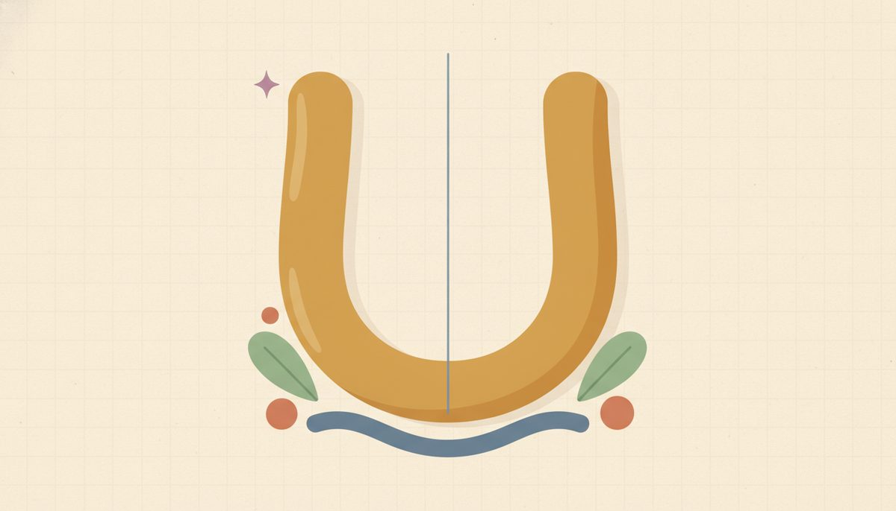

Graphing parabolas

Here's the picture the whole unit has been pointing at. A quadratic, graphed, is a smooth U, called a parabola. The solutions you've been finding are where that U crosses the x-axis, and a U usually crosses twice: once on the way down, once on the way back up. There are your two solutions, drawn.
When a quadratic has just one solution, the U barely touches the axis at its lowest point (the discriminant was 0). When it has none, the whole U floats clear of the axis, above it or below it (the discriminant was negative). The graph re-explains everything from Lesson 12.5 in one image.
That's the deep reason a quadratic usually has two solutions, and it ties the unit together: radicals, roots, the discriminant, and now the curve are all the same story. A quadratic is also just a function from Units 4 and 5: y = x² − 4 and f(x) = x² − 4 are the same object, and the "roots" are simply the inputs where the output is 0, which is where the graph meets the x-axis.
To draw one well, work from numbers rather than guessing the shape. Pick a handful of x-values, compute the matching y for each, plot the points, and join them into a smooth U. The example below shows the line through those points 12.6.f1, with the roots and vertex marked, alongside the table the curve was built from.
Three features tell you most of what you need. The direction comes from the sign of a: a > 0 opens up (a valley), a < 0 opens down (a hill). The roots are where y = 0; solve the quadratic by any method from 12.3 to 12.5. The vertex is the turning point, the bottom of a valley or top of a hill; its x-coordinate is x = −b/(2a), and you plug that back in for its y.
One handy check: when there are two real roots, the vertex sits exactly halfway between them, so the average of the roots gives the vertex's x. That follows from the U being a mirror image across the vertical line through its vertex, the axis of symmetry. The −b/(2a) formula stays the general tool, though; it works even when the roots are irrational or absent.
New words
- 12.6.d1 Parabola: the U-shaped graph of a quadratic y=ax²+bx+c.
- 12.6.d2 Roots / x-intercepts: where the parabola crosses the x-axis, exactly the solutions of ax²+bx+c=0 (Lessons 12.3 to 12.5). This is why a quadratic usually has two.
- 12.6.d3 Vertex: the turning point (bottom of the U if it opens up, top if down). Its x-coordinate is x=-b/2a.
- 12.6.d4 Axis of symmetry: the vertical line x=-b/2a through the vertex; the parabola is a mirror image across it.
- 12.6.d5 Opens up / down: up if a>0, down if a<0.
Worked example
- 12.6.w1 y=x²-4 (here a=1,b=0,c=-4). Read it feature by feature. Direction: a=1>0, so it opens up. Roots: set y=0, so x²-4=0 ⇒ x=±2, crossing at (-2,0) and (2,0). Vertex: x=-0/2=0, and y=0²-4=-4, so (0,-4). Now compute a small table and plot it:
| x | -3 | -2 | -1 | 0 | 1 | 2 | 3 |
|---|---|---|---|---|---|---|---|
| y=x^2-4 | 5 | 0 | -3 | -4 | -3 | 0 | 5 |
Plot those seven points and join them into a smooth U: it dips to (0,-4) at the bottom and rises symmetrically, crossing the axis at the two roots. The table is symmetric around x=0, which matches the vertex sitting on the axis of symmetry there.
- 12.6.w2 y=x²-2x-3 (a=1,b=-2,c=-3). Direction: a>0, opens up. Roots: x²-2x-3=0 ⇒ (x-3)(x+1)=0 ⇒ x=3,-1, so (3,0) and (-1,0). Vertex: x=-(-2)/2=1, and y=1²-2(1)-3=-4, so (1,-4). Notice 1 is exactly midway between the roots -1 and 3, which is the symmetry working as a check. Table:
| x | -2 | -1 | 0 | 1 | 2 | 3 | 4 |
|---|---|---|---|---|---|---|---|
| y | 5 | 0 | -3 | -4 | -3 | 0 | 5 |
Join these into a smooth U through the two roots and down to the vertex at (1,-4).
A clean case to get the reading-off motion before the practice: sketch y = x² − 1. It opens up (a = 1 > 0); the roots come from x² − 1 = 0, so x = ±1, at (−1, 0) and (1, 0); and the vertex is at x = 0, y = −1, so (0, −1). A U dipping to (0, −1) and crossing at ±1: direction, roots, vertex, done.
With a couple of graphs behind you, here are the slips to watch. Don't eyeball the curve into shape; compute the table and let the points decide it, or the U comes out lopsided and teaches you a false picture.
Watch the opening direction: y = −x² + 4 opens down, because a is negative; read the sign of a before you draw. The vertex-x can trip a sign when b is negative: for b = −2, −b/(2a) is −(−2)/2 = +1, not −1.
And keep three things distinct: the roots are where y = 0, the vertex is the turn, and the y-intercept (0, c) is where the curve meets the y-axis. The y-intercept generally isn't a root.
Check yourself
- 12.6.c1 For y = x² − 6x + 8, find the roots and the vertex. How are the roots and the vertex's x-coordinate related? (Roots: x² − 6x + 8 = 0 ⇒ (x − 2)(x − 4) = 0 ⇒ x = 2, 4. Vertex: x = −(−6)/2 = 3, y = 3² − 6(3) + 8 = −1, so (3, −1). The vertex's x, 3, is the average of the roots 2 and 4, so it sits exactly between them.)
- 12.6.c2 A parabola opens downward and never touches the x-axis. What can you say about its a and about its discriminant? (a < 0, since it opens down; and the discriminant is negative, since it has no real roots and never meets the axis.)
- 12.6.c3 Why are the x-intercepts of y = x² − 9 exactly the solutions of x² − 9 = 0? (The x-intercepts are the points where y = 0, and setting y = 0 gives x² − 9 = 0, the very same equation. So its solutions, x = ±3, are precisely where the graph crosses the x-axis.)
You can now graph a quadratic by reading its direction from the sign of a, its roots from y = 0, and its vertex from x = −b/(2a), building the curve from a computed table. And you can explain why the U usually crosses the axis twice.
Mixed practice feels harder on purpose, and that's what makes it last. Every answer is at the end of the lesson; if one stalls you, flip back to the worked example it's based on.
Practice
For each, find the roots, the vertex, and the direction it opens (then sketch):
AnswersTry each one yourself first, then open to check.
- roots x=±1; vertex (0,-1); opens up · 2. roots x=±3; vertex (0,-9); opens up · 3. roots x=±2; vertex (0,-4); opens up · 4. (x+1)(x+3), roots x=-1,-3; vertex x=-2, y=-1 → (-2,-1); opens up · 5. (x-2)(x-4), roots x=2,4; vertex x=3, y=-1 → (3,-1); opens up · 6. (x+3)(x-1), roots x=-3,1; vertex x=-1, y=-4 → (-1,-4); opens up · 7. roots x=±2; vertex (0,4); opens down (a=-1) · 8. roots x=-1,3; vertex (1,-4); opens up — U through (-1,0),(1,-4),(3,0).
A short word problems strand (where the two solutions mean something)
Try these once the methods feel solid. The algebra isn't harder here. A quadratic from a real situation still gives you two roots, and you keep the one that fits the question. Sometimes both roots are real and only one makes sense; that's the "reject the impossible root" move, and it's where "two solutions" and "no real solution" stop being mechanics and start to mean something. Solve each by whichever method is cleanest (factoring is enough for all three below), then read your answer back into the story.
Worked example (model it, then reject a root): A ball is thrown straight up; its height in feet after t seconds is h=-16t²+32t. When does it hit the ground (h=0)? Set -16t²+32t=0, factor -16t(t-2)=0 ⇒ t=0 or t=2. Both are real, but in context t=0 is the launch instant (height 0 because it just left the hand) and t=2 is the landing, so it hits the ground at t=2 seconds. Two roots came out of the math; only one answers the question. Before you start one of these, it helps to name your plan in a sentence: what are you solving for, and which root fits the story?
Application practice (state both roots, then the one that fits, and why):
- A ball's height is h=-16t²+48t feet after t seconds. Find both times its height is 0, and say which is the launch and which is the landing.
- Two consecutive positive integers have a product of 56. Set up n(n+1)=56 and find them; explain why the negative-integer pair is rejected.
- A rectangle's length is 3 more than its width, and its area is 40. Find the width (let the width be w, so w(w+3)=40); explain why one root is impossible.
AnswersTry each one yourself first, then open to check.
- -16t²+48t=0 ⇒ -16t(t-3)=0 ⇒ t=0 or t=3; t=0 launch, t=3 landing (hits the ground at 3 s). · 2. n(n+1)=56 ⇒ n²+n-56=0 ⇒ (n-7)(n+8)=0 ⇒ n=7 or n=-8; keep n=7 → integers 7 and 8 (the problem says positive, so reject n=-8). · 3. w(w+3)=40 ⇒ w²+3w-40=0 ⇒ (w-5)(w+8)=0 ⇒ w=5 or w=-8; a width can't be negative, so w=5 (rectangle 5 by 8).
Quadratics reference (choosing a solving method)
Keep this box handy for when you're staring at a quadratic and wondering which tool to grab. The first job is triage: pick the cleanest method for the shape in front of you, then solve. You have four tools, and the choice is yours. Picking one on purpose, rather than always defaulting to the same one, is part of the skill.
Pick by the shape of the equation:
- Looks like (something)² = k, with no plain x term? Use the Square-Root Property (12.2): isolate the square, then x = ±√k if k ≥ 0 (no real solution if k < 0). Cleanest for x² = 9 (→ x = ±3), 3x² = 27, (x + 1)² = 5. No need to drag the formula into these.
- Factors with nice integers? Use factoring (12.3). Best for tidy integer roots like x² + 5x + 6 = 0 (→ x = −2, −3) or x² − 9 = 0. Quick test: does the discriminant b² − 4ac come out a perfect square? Then it factors over the rationals and factoring will be fast.
- Messy, or it won't factor, or you just want a guaranteed route? Use the quadratic formula (12.5). It solves every quadratic, for example x² − 2x − 5 = 0 (→ 1 ± √6, discriminant 24, not a perfect square) or any case where a isn't 1, like 2x² + 3x − 2 = 0.
- A rule of thumb: try square-root property, then factoring, then formula, in that order of "is it clean here?" When in doubt, the formula never fails.
The four tools at a glance:
- Square-Root Property (12.2), for (something)² = k. Isolate the square, apply ±√( ) when k ≥ 0; k < 0 gives no real solution. The narrow but cleanest case.
- Factoring (12.3), clean but not always possible. Fastest when the quadratic factors with nice integers. Get one side to 0, factor, set each factor = 0. Won't work on most irrational-root quadratics (those whose discriminant isn't a perfect square).
-
Quadratic formula (12.5), universal. $$x=\dfrac{-b\pm\sqrt{b^2-4ac}}{2a}$$ Works on every quadratic; read a, b, c (signs included) straight off ax² + bx + c = 0. The discriminant b² − 4ac pre-counts the real solutions (> 0 two, with a perfect square → rational, else irrational; = 0 one repeated root; < 0 none).
-
Completing the square (12.4), the formula's origin. Add (b/2)² to both sides to build a perfect square, then ±√( ). Rarely the quickest for a numeric answer, but it's the move the quadratic formula is built from.
The ± runs through all four, and the parabola (12.6) shows why: a U usually crosses the x-axis twice because squaring lost the sign, the single idea this whole unit recovers.
You've now closed the loop on Algebra 1. The two long threads of the course both end right here: exponents to roots to quadratics, and multiplying binomials to factoring to solving. You can move among the solving methods, read the discriminant to know what to expect, and picture the parabola behind it all. If a piece of this unit ever goes hazy later, come back to the one sentence everything hangs on: squaring loses the sign, so undoing it gives you back both.